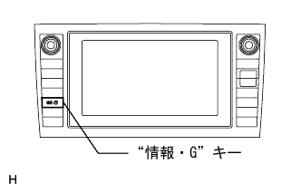
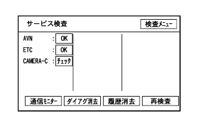
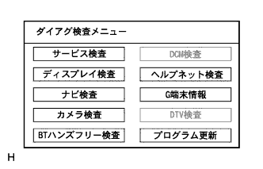
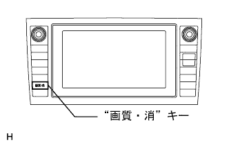
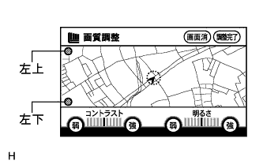

Start Method 1
Stop the vehicle.
Turn ACC ON, turn the ignition ON or start the engine.
While pressing the "INFO/G" key on the navigation receiver assembly, operate the headlight dimmer switch OFF → TAIL → OFF → TAIL → OFF → TAIL → OFF.
When diagnosis starts, the "Service Inspection" screen is displayed and the service inspection is performed.
Select "Inspection Menu" on the "Service Inspection" screen to display the diagnosis inspection menu screen.
Diagnosis Inspection Menu Screen Display Contents Display Description Service Inspection Performs system inspection and diagnosis memory collection, and displays the current and past inspection results of each connected component based on both results Display Inspection Displays the screen for performing inspections specific to the display section Navigation Inspection Displays the screen for performing inspections and settings specific to the navigation ECU section Camera Inspection Displays the screen for adjusting the back guide monitor system (*1) BT Hands-free Inspection Displays the screen for performing inspections and settings of the Bluetooth hands-free function HELPNET Inspection Displays the screen for performing inspections and settings of the HELPNET system G Terminal Information Inspection Displays the screen showing G-BOOK terminal information Program Update This switch can be pressed but is not used - □ HINT □
- *1: When adjusting the back guide monitor system, start diagnosis after turning the ignition ON or starting the engine. (see
 )
)
 |
 |
 |
Start Method 2
Stop the vehicle.
Turn ACC ON, turn the ignition ON or start the engine.
On a screen other than TV, press the "PICTURE/OFF" key on the navigation receiver assembly to display the picture quality adjustment screen.
On the picture quality adjustment screen, slowly touch the upper left and lower left areas in the order upper left → lower left → upper left → lower left → upper left → lower left.
- □ HINT □
- Touch inside the four corners of the picture quality adjustment screen, not the corners of the display.
When diagnosis starts, the "Service Inspection" screen is displayed and the service inspection is performed.
Select "Inspection Menu" on the "Service Inspection" screen to display the diagnosis inspection menu screen.
Diagnosis Inspection Menu Screen Display Contents Display Description Service Inspection Performs system inspection and diagnosis memory collection, and displays the current and past inspection results of each connected component based on both results Display Inspection Displays the screen for performing inspections specific to the display section Navigation Inspection Displays the screen for performing inspections and settings specific to the navigation ECU section Camera Inspection Displays the screen for adjusting the back guide monitor system (*1) BT Hands-free Inspection Displays the screen for performing inspections and settings of the Bluetooth hands-free function HELPNET Inspection Displays the screen for performing inspections and settings of the HELPNET system G Terminal Information Inspection Displays the screen showing G-BOOK terminal information Program Update This switch can be pressed but is not used - □ HINT □
- *1: When adjusting the back guide monitor system, start diagnosis after turning the ignition ON or starting the engine. (see)
 |
 |
Cancel Method
To cancel, turn the IG OFF. Or press the "PICTURE/OFF" key for 3 seconds or more.